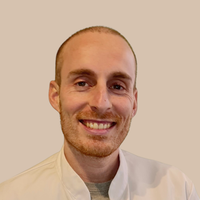
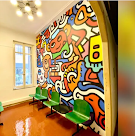

L'équipe médicale
Dr Yannis Ait Moussa
Médecin du sport

Dr Nicolas de Prémont
Médecin du sport
Adresse

44 Rue des 3 Frères Barthélémy, 13006 MarseilleMétro Notre Dame Du Mont (ligne M2)
Tramway Eugène Pierre (ligne T1)
Bus 3 Frères Barthélémy (ligne 74)
Parking public 48 Place Jean Jaurès, Marseille